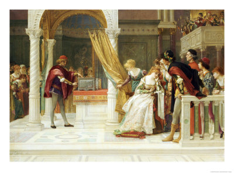

At Venice, Antonio's ships are reported lost at sea. This leaves him unable to satisfy the bond. Shylock has Antonio brought to the court.  At Belmont, Bassanio receives a letter telling him that Antonio has been unable to return the loan taken from Shylock. Portia and Bassanio marry, as do Gratiano and Portia's handmaid Nerissa. Bassanio and Gratio leave for Venice with money from Portia to save Antonio's life. On their way, they seek the counsel of Portia's cousin, Bellario, a lawyer, at Padua.
The climax of the play comes in the court of the Duke of Venice. Shylock refuses Bassanio's offer of 6,000 ducats, twice the amount of the loan. He demands his pound of flesh from Antonio. The Duke, wishing to save Antonio but unable to nullify a contract, refers the case to a visitor who introduces himself as Balthazar, a young male "doctor of the law", bearing a letter of recommendation to the Duke from the learned lawyer Bellario. The doctor is actually Portia in disguise, and the law clerk who accompanies her is actually Nerissa, also in disguise. As the court grants Shylock his bond and Antonio prepares for Shylock's knife, Portia points out that the contract only allows Shylock to remove the flesh, not the "blood", of Antonio. Thus, if Shylock were to shed any drop of Antonio's blood, his "lands and goods" would be forfeited under Venetian laws. Defeated, Shylock concedes to accepting Bassanio's offer of money for the defaulted bond, first his offer to pay "the bond thrice", which Portia rebuffs, telling him to take his bond, and then merely the principal, which Portia also prevents him from doing on the ground that he has already refused it. At Antonio's request, the Duke grants remission of the state's half of forfeiture. Bassanio does not recognise his disguised wife, but offers to give a present to the supposed lawyer.
At Belmont, Portia and Nerissa taunt and pretend to accuse their husbands before revealing they were really the lawyer and his clerk in disguise. After all the other characters make amends, Antonio learns from Portia that three of his ships were not stranded and have returned safely after all.